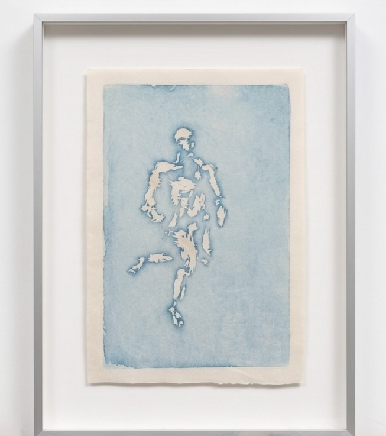

- Year年份
- 2024
- Medium媒材
- Woodblock print木刻版畫
- Size尺寸
- B5
- Edition版數
- Edition of 33 版
lonlon冷冷
Artist working with moving image, performance and water-based woodblock printmaking. Based in Taipei. 藝術家，創作橫跨錄像、行為表演與水印木刻版畫，現居台北。

Selected Works作品
- Year年份
- 2025
- Medium媒材
- Water-based woodblock print水印木刻版畫
- Size尺寸
- B5
- Edition版數
- Unique獨版
- Year年份
- 2024
- Medium媒材
- Archival pigment print on fine art paper數位微噴、無酸藝術紙
- Edition版數
- Edition of 3030 版
More works更多作品
- Year年份
- 2025
- Format形式
- Transdisciplinary group performance跨領域聯合演出
Presented演出
- Galeri Lorong, Yogyakarta, IndonesiaGaleri Lorong，印尼日惹
- Year年份
- 2025
- Format形式
- Group exhibition聯展
Exhibited展出
- Toni-Areal, Zurich University of the Arts (ZHdK), Zurich, Switzerland蘇黎世藝術大學 Toni-Areal，瑞士蘇黎世
- Year年份
- 2024
- Medium媒材
- Video錄像
- Duration片長
- 8 min
- Excerpt片段
- In the showreel (5 min)收錄於作品預覽（5 分鐘）
Exhibited展出
- Athens Digital Arts Festival (invited), Athens, Greece雅典數位藝術節（受邀發表），希臘雅典
- Experimental Theater of NTU, Taipei, Taiwan臺大實驗劇場，台北
- Year年份
- 2024
- Medium媒材
- Art book藝術書
Exhibited展出
- National Center of Photography and Images, Taipei, Taiwan國家攝影文化中心，台北
- Taipei Art Book Fair, Taipei, Taiwan台北藝術書展，台北
- Art Book Fair of Venice Biennale, Venice, Italy威尼斯雙年展藝術書展，義大利威尼斯
- Year年份
- 2023
- Format形式
- Collaborative performance & theatre, co-production跨域表演，共同製作演出
- Duration片長
- 15 min
- Excerpt片段
- In the showreel (5 min)收錄於作品預覽（5 分鐘）
Presented演出
- Umay Theater, Taipei, TaiwanUmay Theater，台北
- Year年份
- 2022
- Medium媒材
- Video錄像
- Duration片長
- 12 min
- Excerpt片段
- In the showreel (5 min)收錄於作品預覽（5 分鐘）
Presented展出
- Experimental Theater of NTU, Taipei, Taiwan臺大實驗劇場，台北
lonlon 冷冷
arts.lonp@gmail.com · instagram.com/arts.lonlon · lonp.pages.dev
CV 履歷
lonlon (冷冷). Lives and works in Taipei, Taiwan. Working across digital media, virtual reality and visual syntax. 冷冷（lonlon），現居台北。遊走於數位媒體、虛擬現實與視覺語彙之間。
Education學歷
- 2024–25Studies in Fine Arts, Taipei National University of the Arts國立臺北藝術大學 美術學系
Residencies & programmes駐村與交流
- 2025Transcultural Collaboration Program, by invitation of Zurich University of the Arts (ZHdK)跨文化合作計畫，受蘇黎世藝術大學邀請從事藝術交流與工作Zurich, Switzerland · 2025.01
Selected exhibitions & performances展演經歷
- 2025studies on incestGroup exhibition, Toni-Areal, ZHdK, Zurich, Switzerland聯展，蘇黎世藝術大學 Toni-Areal，瑞士蘇黎世
- 2025studies on synchronicityTransdisciplinary group performance, Galeri Lorong, Yogyakarta, Indonesia跨領域聯合演出，Galeri Lorong，印尼日惹
- 2024finale: white 最終章：白色Art book. National Center of Photography and Images & Taipei Art Book Fair, Taipei; Art Book Fair of Venice Biennale, Venice, Italy藝術書。國家攝影文化中心、台北藝術書展；威尼斯雙年展藝術書展，義大利威尼斯
- 2024wind continues in motion 風行不止Video. Athens Digital Arts Festival, Athens, Greece; Experimental Theater of NTU, Taipei錄像。雅典數位藝術節，希臘雅典；臺大實驗劇場，台北
- 2023seeping 滲人Collaborative performance & theatre, Umay Theater, Taipei合作演出與劇場，Umay Theater，台北
- 2022carnival to alice, a story of reconstruction 愛麗絲的新生Video. Experimental Theater of NTU, Taipei錄像。臺大實驗劇場，台北
About關於
lonlon (冷冷) is an artist based in Taipei. The practice moves between video, multimedia performance and installation, AI-generated workflows and traditional water-based woodblock printmaking.
Works have been shown at festivals, theatres and exhibitions in Athens, Venice, Zurich, Yogyakarta and Taipei, including the Athens Digital Arts Festival and the Art Book Fair of Venice Biennale. In 2025 lonlon took part in the Transcultural Collaboration Program at Zurich University of the Arts.
冷冷（lonlon），現居台北的藝術家。創作遊走於錄像、多媒體行為與裝置、AI 生成工作流，以及傳統的水印木刻版畫之間。
作品曾於雅典、威尼斯、蘇黎世、日惹與台北的藝術節、劇場與展覽中呈現，包括雅典數位藝術節與威尼斯雙年展藝術書展。2025 年受邀參與蘇黎世藝術大學跨文化合作計畫。
- Based in現居Taipei, Taiwan台灣台北
- Media媒材Video, performance, installation, woodblock print錄像、行為、裝置、木刻版畫
- Sales銷售Directly through the studio. 由工作室直接銷售。Available works可收藏作品
- Instagram@arts.lonlon
- Also其他Game development & streaming: 遊戲開發與實況：Human Leather Couch Factory ↗
Contact聯絡
For exhibitions, screenings, acquisitions and press, write to the studio. 展覽、放映、收藏與媒體邀約，歡迎來信工作室。
arts.lonp@gmail.comMailing list: occasional news on exhibitions and new work. 郵件名單：不定期收到展覽與新作消息。 Join by email →寄信加入 →